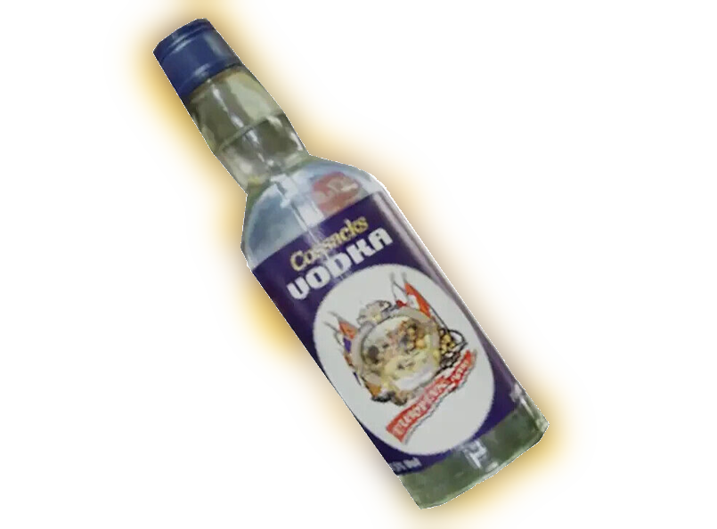

Медикаменты
Бинт
Средство для приостанавливания кровотечений. При использовании снижает подвижность. Прототип — бинт марлевый медицинский стерильный тип 7м × 14 см. Производитель — «Городищенская отделочная фабрика».
Антирад
Набор препаратов (см. интересные факты), выводящий радиацию из организма. Является более сильным средством от радиации, чем водка. Прототип — препараты из аптечки индивидуальной армейской АИ-1м (см. ниже), в частности, шприц-тюбик, присутствующий в игре в виде модели.
Водка «Казаки»
Бутылка водки емкостью 0,5 литра. Обладает легким эффектом выведения радиации, но при длительном применении вызывает головокружение.
Энергетический напиток
Энергетический напиток «S.T.A.L.K.E.R.» (Non-Stop). При употреблении способствует быстрому восстановлению сил. Является незаметной «пасхалкой» так как надпись на баночке отсылает к первой игре серии
Аптечки
Набор препаратов, останавливающих кровотечение, восстанавливающих уровень здоровья (некоторые восстанавливают полностью) и снижающих уровень радиации. Основным отличием между аптечками является цвет аптечки и степень восстановления здоровья. Научные аптечки, кроме выведения радиации восстанавливают и пси-здоровье. В игре встречаются три разновидности аптечек. Это:
- Простая аптечка (оранжевая)
- Армейская аптечка (синяя)
- Научная аптечка (желтая)
Прототипом всех аптечек была версия аптечки индивидуальной — АИ-2 и АИ-1 м. При этом, обычная аптечка — единственная, которая и по цвету и по названию соответствует своему прототипу, АИ-2.
Прототипом армейской аптечки послужила реально существующая индивидуальная армейская аптечка АИ-1 м, однако она имела другой цвет и другое обозначение.
Научная аптечка (на первый взгляд) имеет в качестве прототипа аптечку АИ-1м (имеющую такую же форму и желтый цвет корпуса), однако наиболее близкой к ней по назначению (выведение большого количества радиации) являлась аптечка для работников АЭС типа АП.